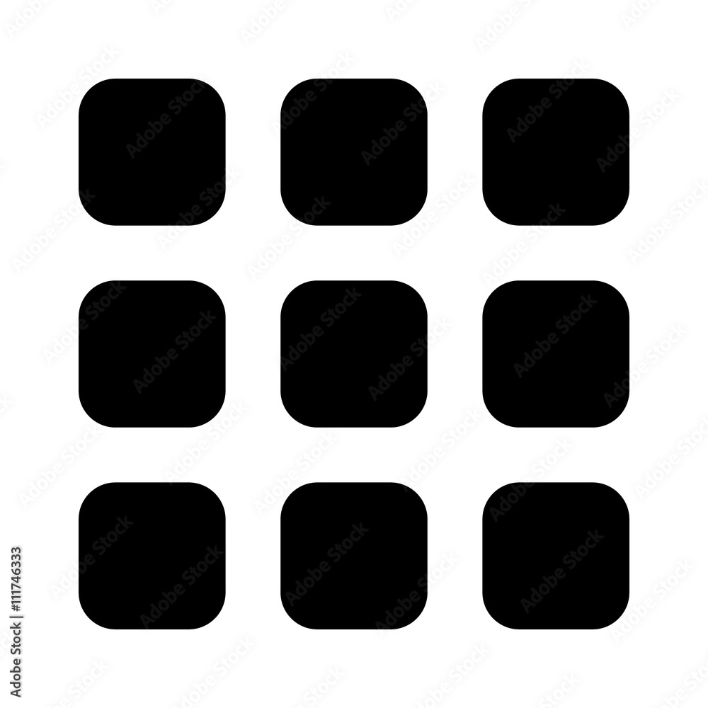

Naguib Sawiris
About 14.200.200 results (0.51 seconds)
Learn more about Naguib Sawiris on WikipediaNAGUIB SAWIRIS is Chairman of the Board of Weather Investments II S.à r.l, La Mancha Resources Inc.’s parent company and is also the Executive Chairman of Orascom Telecom Media and Technology Holding S.A.E. (OTMT).
Learn more about Naguib Sawiris early lifeBorn on June 15, 1954, in Cairo, Egypt, to businessman Onsi Sawiris (founder of Orascom Group) and Yousriya Loza Sawiris, Naguib is the eldest of three brothers. His brothers, Nassef and Samih, are also billionaires.[4] Naguib received a Diploma from the German Evangelical School in Giza, as well as a Diploma of Mechanical Engineering with Master's degree in Technical Administration from ETH Zurich.
careerSince joining Orascom, the family business in 1979, Sawiris has contributed to the growth and diversification of the company into what it is today one of Egypt's largest and most diversified conglomerates and the country's largest private sector employer. Sawiris built the railway, information technology, and telecommunications sectors of Orascom. Management decided to split Orascom into separate operating companies in the late 90s: Orascom Telecom Holding (OTH), Orascom Construction Industries (OCI), Orascom Hotels & Development and Orascom Technology Systems (OTS).[5] In August 2012, Sawiris was appointed chairman of La Mancha Holding.[6] In 2014, Sawiris raised more than $4 billion when he sold his stake in his telecommunications companies to Russian company Vimplecom.[7][8] In early 2015, Sawiris bought a majority stake in the pan-European television channel Euronews. He remained as the main shareholder until beginning the process of selling his stake to Alpac Capital in December 2021.[9] In September 2015, he offered to buy an island off Greece or Italy to help hundreds of thousands of refugees fleeing the Syrian conflict. However, he conceded the plan could face challenges in terms of jurisdictions and customs regulation.[10] In December 2016, Sawiris resigned as the CEO of Orascom Telecom Media & Technology.[11]